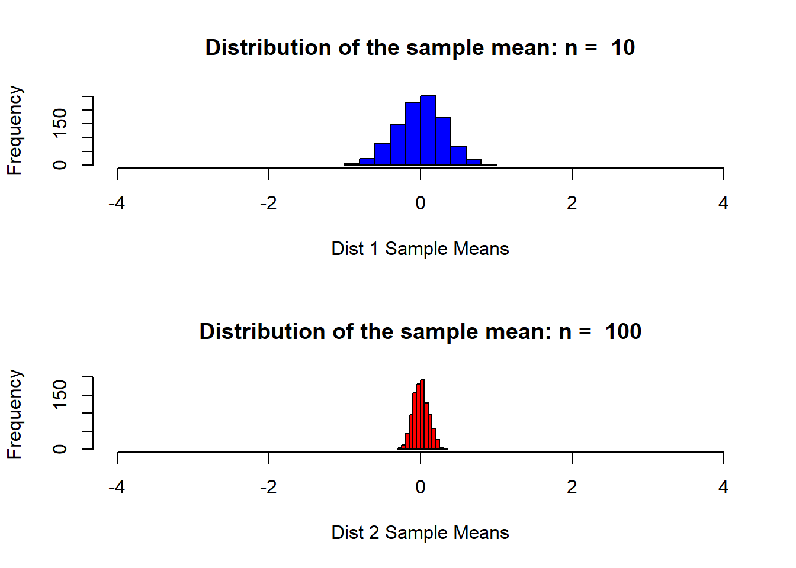

df = read.table(file.choose(),stringsAsFactors = FALSE,header = FALSE,sep = ";")
n1 = 10 # sample size per sample for 1st distribution
n2 = 100 # sample size per sample for 2nd distribution (we will compare these distribuions)
simulations = 1000 #number of samples and thus number of xbars we will generate.
mu = 0; # mean parameter for use with normal distribuions
sigma = 1; # standard deviation parameter for use with normal distribuionsxbar_holder1 = numeric(simulations) # This will hold all the sample means for the first distribution.
xbar_holder2 = numeric(simulations) # This will hold all the sample means for the second distribution.Generate 1000 samples each of size 10 and find the mean of each sample. Then store each mean in the xbar_holder vector.
for (i in 1:simulations)
{
sample1 = rnorm(n1,mean = mu, sd = sigma)
sample2 = rnorm(n2,mean = mu, sd = sigma)
xbar1 = mean(sample1)
xbar2 = mean(sample2)
xbar_holder1[i] = xbar1
xbar_holder2[i] = xbar2
}par(mfrow = c(2,1))
hist(xbar_holder1, col = "blue", main = paste("Distribution of the sample mean: n = ", n1), xlab = "Dist 1 Sample Means", xlim = c(-4,4))
hist(xbar_holder2, col = "red", main = paste("Distribution of the sample mean: n = ", n2), xlab = "Dist 2 Sample Means", xlim = c(-4,4))
summary(xbar_holder1) #5 number summary and the mean## Min. 1st Qu. Median Mean 3rd Qu. Max.
## -1.115336 -0.223827 0.006582 -0.003273 0.204604 0.911881summary(xbar_holder2) #5 number summary and the mean## Min. 1st Qu. Median Mean 3rd Qu. Max.
## -0.331790 -0.064439 0.002134 0.003349 0.074893 0.300551sd(xbar_holder1) # standard deviation of dstribuion 1## [1] 0.3112268sd(xbar_holder2) #standard deviation of distribuion 2## [1] 0.1019713